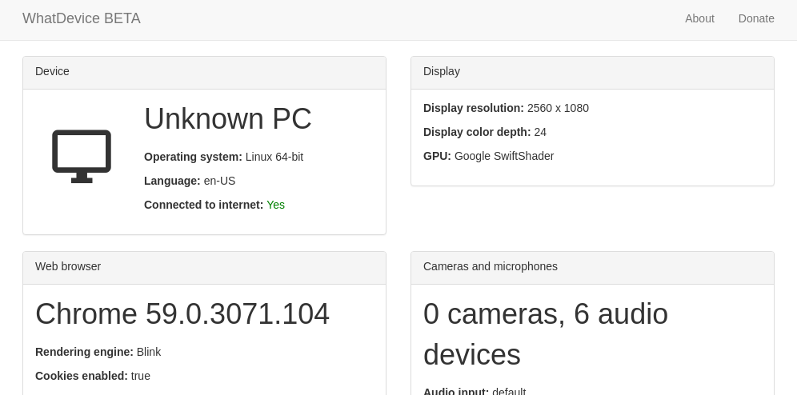

There are plenty of instances where you may need to quickly find out information about your computer. But trying to find the information you need can be difficult, especially if you’re trying to diagnose an operating system you don’t normally use. If you usually work on a Mac, you might not know how to lookup the GPU on Windows without doing some googling first.
That’s where WhatDevice comes in. It’s a web app, currently in beta, that aims to display everything about your device on one page.

Not sure what OS your friend is running? Just tell them to type in whatdevice.app. Can’t figure out if your video camera is properly connected? Just type in whatdevice.app. Pretty easy.
This is an early beta, and not every planned feature is implemented yet. For example, WhatDevice will soon allow you to save the complete details of your device to a text file. I also plan to make it an offline-ready Progressive Web App, but that isn’t fully working yet.
If you have feedback for WhatDevice, email me from the contact page or create an issue on the GitHub repository. Speaking of GitHub, WhatDevice is also completely open-source under the GPLv3 license!